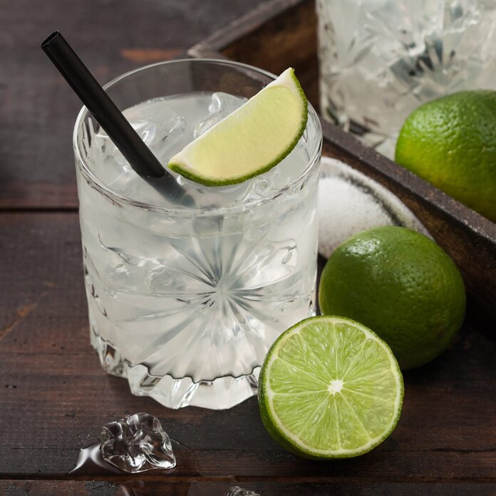

Home Page

Gimlet

For the light drinker, suggest a Gimlet. The blend of
slightly sweet and tart flavors is appealing,
but not overwhelming. You can also use vodka if gin
isn’t your favorite.
Ingredients:
- gin
- confectioners' sugar
- lime juice
Steps:
- Fill a cocktail shaker three-fourths full with ice
- Add 2 ounces of gin and 1 teaspoon of confectioners’ sugar
- Add 1 ounce of lemon juice
- Cover and shake 10-15 seconds or until condensation forms on the outside of the shaker
- Strain into a an ice-filled rocks glass
- garnish with lime slice